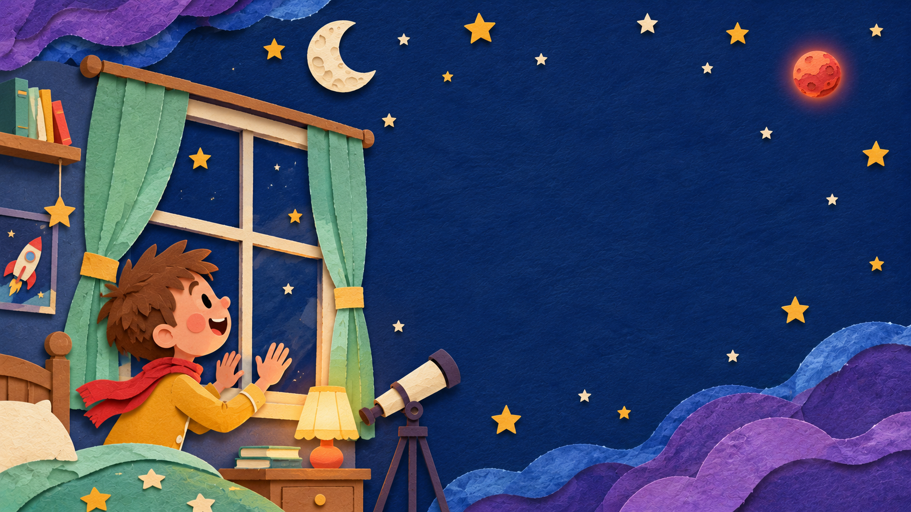

Look through the telescopeYou found Mars!Johnny can see the red planet up close.Look back at the sky
PAGE 1 · THE RED DOTA red dot called Mars.One night, Johnny pressed his nose to the window. A tiny red planet blinked in the sky. “I wonder what it feels like up there?”